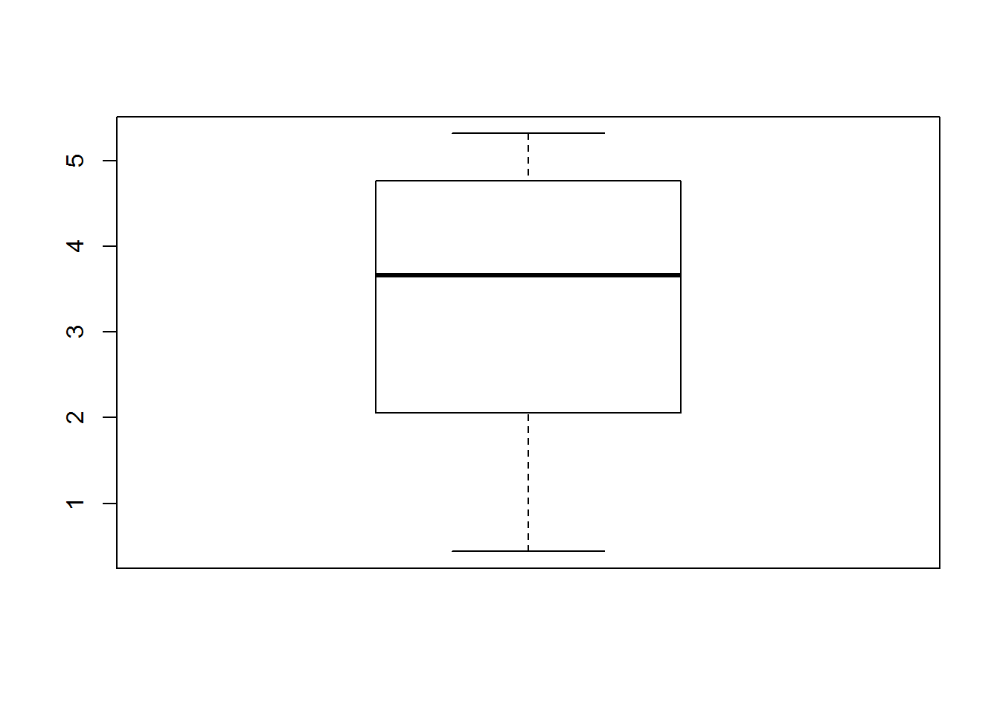
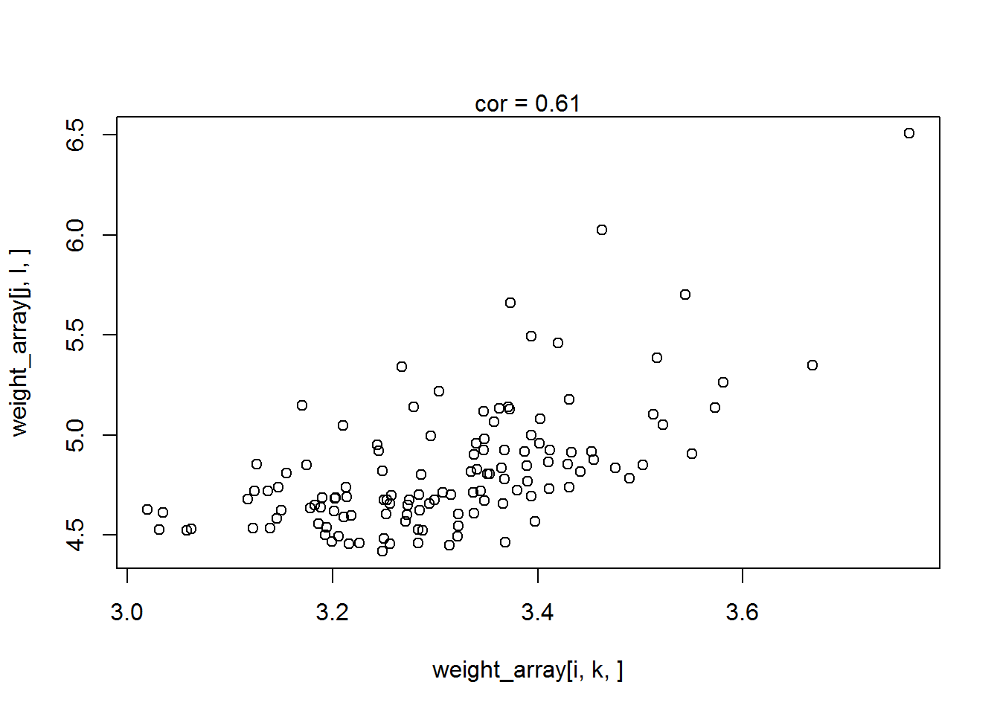
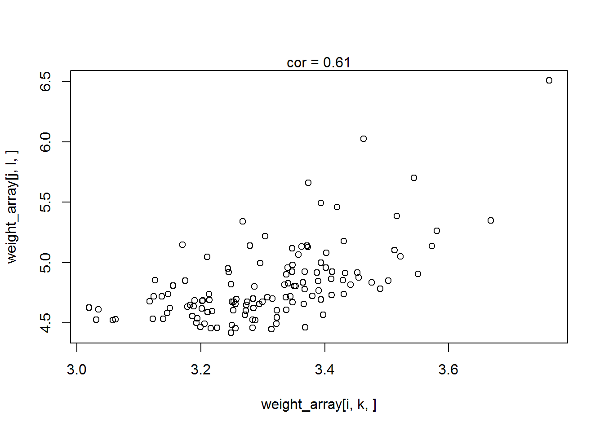

VOOM on SeqGenDiff
David Gerard
March 1, 2017
Summary
The goal of this analysis is to explore how different the voom estimates are using the different permutations and group labelings of a large RNAseq dataset. The idea is that if there is a lot of variability, then VOOM is sensitive to mispecification of the mean model. I.e., if there are confounding factors effecting the mean model, then not accounting for these can effect the VOOM weights. I see a moderate amount of variability. I also see voom weights that are negatively correlated with each other as we vary the group permutations.
Analysis
set.seed(81)
nsamp <- 10
ngene <- 10000
library(tidyverse)## Loading tidyverse: ggplot2
## Loading tidyverse: tibble
## Loading tidyverse: tidyr
## Loading tidyverse: readr
## Loading tidyverse: purrr
## Loading tidyverse: dplyr## Conflicts with tidy packages ----------------------------------------------## filter(): dplyr, stats
## lag(): dplyr, statsdat <- read.csv("../data/muscle.csv")[, -c(1:2)]
dat <- dat[apply(dat, 1, median) >= 10, ] ## remove low expressed genes
which_samp <- sample(1:ncol(dat), size = nsamp)
which_gene <- sample(1:nrow(dat), size = ngene)
subdat <- dat[which_gene, which_samp]
rm(dat)Look at how variable the voom weights are based on group labeling. Only 10 choose 5 (252) possible ways to partition in half.
library(limma)
comblist <- combn(10, 5, simplify = FALSE)
get_one <- function(x, n) {
y <- rep(1, n)
y[x] <-0
return(y)
}
poss_design <- lapply(comblist, FUN = get_one, n = nsamp)
weight_array <- array(NA, dim = c(ngene, nsamp, length(poss_design)))
for (index in 1:length(poss_design)) {
X <- model.matrix(~poss_design[[index]])
vout <- voom(counts = subdat, design = X)
weight_array[, , index] <- vout$weights
}Explore variability in estimated weights.
sd_weights <- apply(weight_array, c(1, 2), sd)
mean_weights <- apply(weight_array, c(1, 2), mean)
boxplot(c(mean_weights))
boxplot(c(sd_weights))The means of the weights are on the order of 2 to 3.5 and the sd of the weights is on the order of 0.1 to 0.2.
for (index in 1:30) {
i <- sample(1:ngene, 1)
j <- sample(1:ngene, 1)
k <- sample(1:nsamp, 1)
l <- sample(1:nsamp, 1)
plot(weight_array[i, k, ], weight_array[j, l, ])
abline(0, 1)
mtext(paste0("cor = ", round(cor(weight_array[i, k, ], weight_array[j, l, ]), digits = 2)))
} 

Lots of variability in the weight estimates. They aren’t too robust to changing the design.
sessionInfo()## R version 3.3.2 (2016-10-31)
## Platform: x86_64-w64-mingw32/x64 (64-bit)
## Running under: Windows 10 x64 (build 14393)
##
## locale:
## [1] LC_COLLATE=English_United States.1252
## [2] LC_CTYPE=English_United States.1252
## [3] LC_MONETARY=English_United States.1252
## [4] LC_NUMERIC=C
## [5] LC_TIME=English_United States.1252
##
## attached base packages:
## [1] stats graphics grDevices utils datasets methods base
##
## other attached packages:
## [1] limma_3.30.11 dplyr_0.5.0 purrr_0.2.2 readr_1.0.0
## [5] tidyr_0.6.1 tibble_1.2 ggplot2_2.2.1 tidyverse_1.1.1
##
## loaded via a namespace (and not attached):
## [1] Rcpp_0.12.9 plyr_1.8.4 forcats_0.2.0 tools_3.3.2
## [5] digest_0.6.12 jsonlite_1.2 lubridate_1.6.0 evaluate_0.10
## [9] nlme_3.1-131 gtable_0.2.0 lattice_0.20-34 psych_1.6.12
## [13] DBI_0.5-1 yaml_2.1.14 parallel_3.3.2 haven_1.0.0
## [17] xml2_1.1.1 stringr_1.2.0 httr_1.2.1 knitr_1.15.1
## [21] hms_0.3 rprojroot_1.2 grid_3.3.2 R6_2.2.0
## [25] readxl_0.1.1 foreign_0.8-67 rmarkdown_1.3 modelr_0.1.0
## [29] reshape2_1.4.2 magrittr_1.5 backports_1.0.5 scales_0.4.1
## [33] htmltools_0.3.5 rvest_0.3.2 assertthat_0.1 mnormt_1.5-5
## [37] colorspace_1.3-2 stringi_1.1.2 lazyeval_0.2.0 munsell_0.4.3
## [41] broom_0.4.2This R Markdown site was created with workflowr